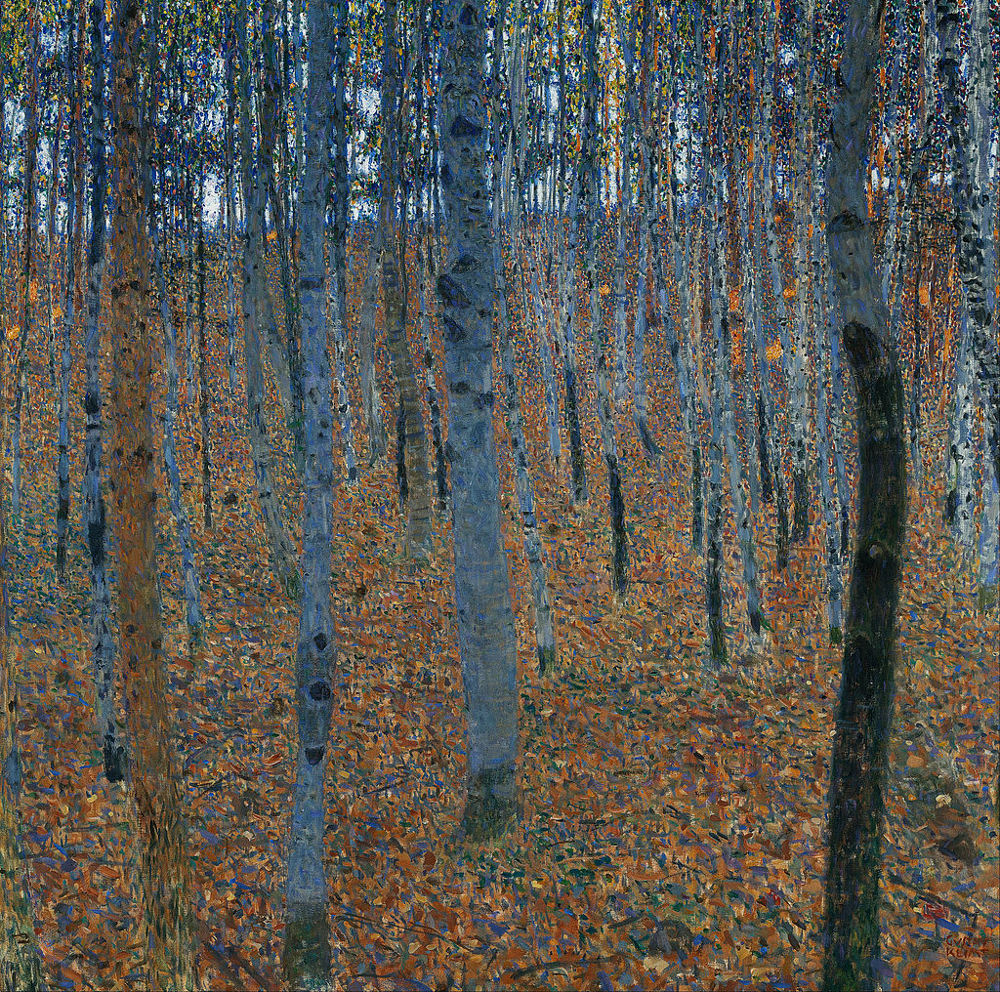

<head>
<meta charset="UTF-8" />
<meta name="keywords" content="drawing, painting" />
<meta name="description" content="drawings by Sunjy" />
<title>Sunjy</title>
<link rel="shortcut icon" type="image/x-icon" href="../../mImages/mCommon/favicon.ico" media="screen" />
<link rel="stylesheet" type="text/css" href="../../mCsses/mCommon/mCssA.css" />
<link rel="stylesheet" type="text/css" href="../../mCsses/mCommon/mCssB.css" />
<link rel="stylesheet" type="text/css" href="../../mCsses/mCommon/mCssC.css" />
<link rel="stylesheet" type="text/css" href="../../mCsses/mCommon/mCssD.css" />
<link rel="stylesheet" type="text/css" href="../../mCsses/mContent/mCssA.css" />
<link rel="stylesheet" type="text/css" href="../../mCsses/mContent/mCssB.css" />
<link rel="stylesheet" type="text/css" href="../../mCsses/mContent/mCssC.css" />
<link rel="stylesheet" type="text/css" href="../../mCsses/mContent/mCssD.css" />
</head>
<script type="text/javascript" src="../../mScripts/mContent/mContentAA.js" /></script>
<script type="text/javascript" src="../../mScripts/mContent/mContentAB.js" /></script>
<script type="text/javascript" src="../../mScripts/mContent/mContentAC.js" /></script>
<script type="text/javascript" src="../../mScripts/mContent/mContentAD.js" /></script>
<script type="text/javascript"></script> 
<script type="text/javascript">
document.write('<div class="mImgAbsolute"></div>');
/*
document.write('<p class="mFontSizeBColor" />From a white paper...</p>');
document.write('<table class="center"><tr><td>');
document.write('');
document.write('</td></tr></table>');
*/
</script>


<script type="text/javascript">
document.write('<p class="mFontSizeBColor" />Beech Grove I</p>');
document.write('<p class="mFontSizeSColor" />Beech Grove I” by Gustav Klimt depicts the smooth and light grey bark of the European beech tree. As a naturally growing forest tree, it marks an important border between the European deciduous forest zone and the northern pine forest zone.<br><br>Beechwood is an excellent firewood, but also used in the bottom of fermentation tanks for the production of beer. Beechwood provides a complex surface on which the yeast can settle. Beech logs are burned to dry the malt used in some German smoked beers, giving the beers their typical flavor. Beech is also used to smoke ham, sausages, and some cheeses.<br><br>In antiquity, the barks of the beech trees were used for writing-related purposes. Beechwood tablets were a common writing material in Germanic societies before the development of paper.<br><br>The Old Norse bók has the primary sense of “beech” but also a secondary sense of “book,” and it is from bōc that the modern word derives. In modern German, the word for “book” is Buch, with Buche meaning “beech tree.”<br><br>In modern Dutch, the word for “book” is boek, with beuk meaning “beech tree.” In Swedish, these words are the same, bok meaning both “beech tree” and “book.”<br></p>');
document.write('<table class="center" /><tr><td>');
document.write('<br>Beechwood is an excellent firewood, but also used in the bottom of fermentation tanks for the production of beer. Beechwood provides a complex surface on which the yeast can settle. Beech logs are burned to dry the malt used in some German smoked beers, giving the beers their typical flavor. Beech is also used to smoke ham, sausages, and some cheeses.<br><br>In antiquity, the barks of the beech trees were used for writing-related purposes. Beechwood tablets were a common writing material in Germanic societies before the development of paper.<br><br>The Old Norse bók has the primary sense of “beech” but also a secondary sense of “book,” and it is from bōc that the modern word derives. In modern German, the word for “book” is Buch, with Buche meaning “beech tree.”<br><br>In modern Dutch, the word for “book” is boek, with beuk meaning “beech tree.” In Swedish, these words are the same, bok meaning both “beech tree” and “book.”<br>" />');
document.write('</td></tr></table>');
</script>


